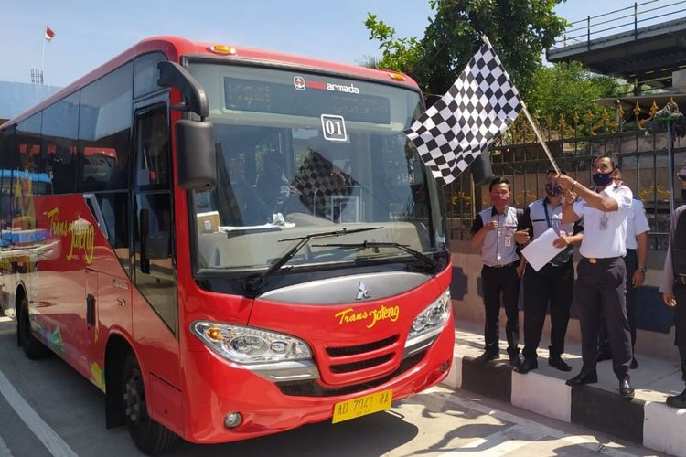
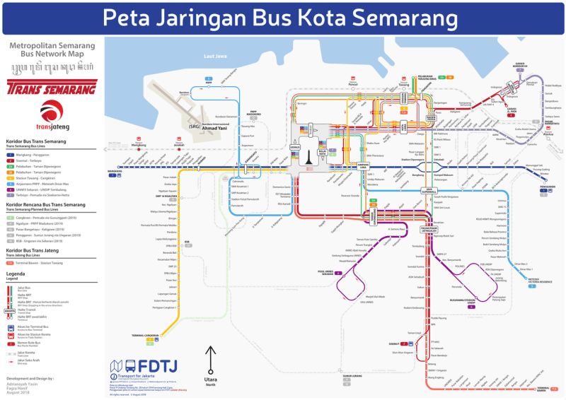
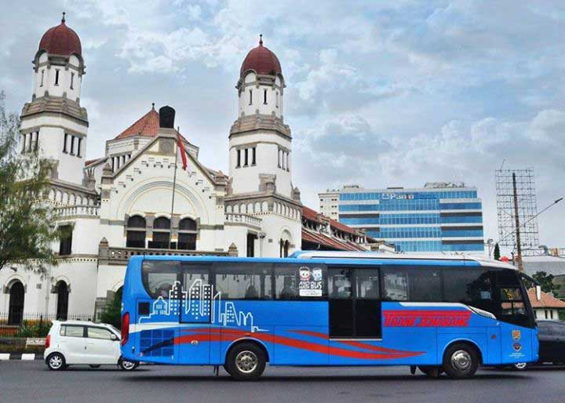
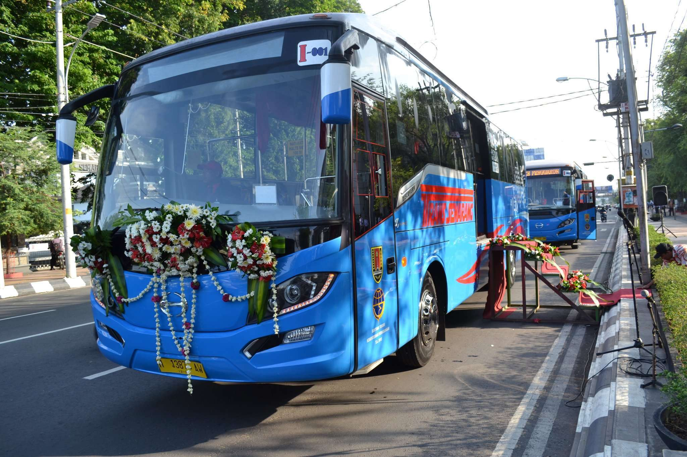

Peta Jalur Rute Trans Semarang Terbaru
Cari peta jalur rute Trans Semarang terbaru tahun 2021? Sebelumnya kenalan dulu dong sama Trans Semarang. Dikenal juga sebagai BRT Trans Semarang maupun BRT merupakan sistem transportasi Bus Rapid Transit terbesar di Jawa Tengah yang sekarang beroperasi di Kota dan Kabupaten Semarang.
Bus Rapid Transit Trans Semarang ini dioperasikan untuk membantu mengurai kemacetan di Kota Semarang yang semakin meningkat. Selain itu untuk mempermudah wisatawan mengunjungi beberap destinasi wisata yang ada di Kota Semarang.
Trans Semarang ini sekarang menjadi primadona warga kota Semarang dan sekitarnya untuk berpergian.
Bus Rapid Trans Semarang ini tarifnya terjangkau dan lebih tepatan waktu. Selain itu armadanya telah dipasang pendingin udara.
Kecuali Koridor Bandara, Trans Semarang beroperasi dari jam 05.30-17.30 WIB (Dimana Koridor Bandara beroperasi dari jam 18.00-00 WIB)
Berapa Tarif Trans Semarang 2021?

Tarif Trans Semarang adalah sebesar IDR 1.000,00 untuk Anak dibawah 6 tahun, pemegang Kartu Identitas Anak, Pelajar berseragam sekolah) & Mahasiswa (dengan menunjukkan KTM). Namun tarif khusus Pelajar dan Mahasiswa ini tidak berlaku pada hari libur nasional termasuk hari minggu. Untuk pengguna umum dikenakan tarif Trans Semarang sebesar IDR 3.500,00.
Tarif ini berlaku pada pembayaran tunai maupun non tunai. Untuk perpindahan ke BRT Trans Jateng maupun sebaliknya akan dikenakan tarif baru. Tarif Trans Semarang bisa dibilang cukup murah. Tarinya juga mirip dengan harga tiket atau tarif Trans Jogja di Yogyakarta dan Trans Jakarta di Jakarta.
Berapa Tarif Trans Semarang 2021?

Bus Rapid Transit Trans Semarang Trans Semarang sekarang memiliki tujuh koridor utama dan satu koridor khusus, yaitu Koridor I jurusan Terminal Mangkang — Terminal Penggaron, Koridor II jurusan Terminal Terboyo — Terminal Sisemut Ungaran, Koridor III jurusan Pelabuhan Tanjung Emas — Elizabeth, Koridor IV Terminal Cangkiran — Bandara Ahmad Yani — Stasiun Tawang, Koridor V jurusan Dinar Mas Meteseh — PRPP, Koridor VI jurusan Undip Tembalang — Unnes Sekaran, dan Koridor VII jurusan Genuk — Balai Kota Semarang. Selain itu, terdapat Koridor Bandara yang melayani rute Bandar Udara Internasional Achmad Yani — Simpang Lima
Jalur Koridor Utama Trans Semarang 2021
Jalur IIIB : Pelabuhan Tanjung Emas – Jl. Ronggowarsito ↔ Jl. Pengapon ↔ Jl. R. Patah ↔ Jl. Letjen Suprapto ↔ Jl. Imam Bonjol Stasiun Poncol — Jalan Kapten Pierre Tendean ↔ Jl. Pemuda Halte Balai Kota – Tugu Muda – Jl. Pandanaran – Simpang Lima – Jl. Pahlawan ↔ Jl. Diponegoro – Halte Transit Taman Diponegoro – Jl. Sultan Agung ↔ Jl. Dr. Wahidin ↔ Jl. MT Haryono ↔ Bubakan ↔ Jl. Cenderawasih ↔ Jl. Letjen Suprapto ↔ Jl. Kolonel Sugiyono ↔ Stasiun Tawang ↔ Jl. Ronggowarsito – Pelabuhan Tanjung Emas.
| Koridor yang sudah dibangun |
| 1 |
Biru |
Terminal Mangkang — Terminal Penggaron |
46 |
| 2 |
Merah |
Terminal Terboyo — Terminal Sisemut, Ungaran |
48 |
| 3A |
Hijau |
Pelabuhan Tanjung Emas — Elizabeth |
37 |
| 3B |
Jingga |
34 |
| 4 |
Kuning |
Terminal Cangkiran — Stasiun Semarang Tawang |
est. 40 |
| 5 |
Biru Muda |
Meteseh — Bandara — PRPP |
41 |
| B |
Bandara — Simpang Lima |
10 |
| 6 |
Ungu |
Universitas Diponegoro — Universitas Negeri Semarang |
40 |
| 7 |
Ungu Terang |
Genuk — Balaikota Semarang |
est. 30 |
| Koridor yang akan dibangun |
| 8 |
Hijau Terang |
Terminal Cangkiran — Gunungpati — Balaikota Semarang |
TBD |
Jalur Rute Trans Semarang Koridor I (Terminal Mangkang — Terminal Penggaron)
• Dari Mangkang : Terminal Mangkang ↔ Pasar Mangkang ↔ Sango ↔ Kawasan Industri ↔ Karanganyar (SMA 8) ↔ Karpet ↔ KTI ↔ Taman Lele ↔ Lapangan Tugu ↔ PLN ↔ RSUD Tugu ↔ Pengadilan ↔ Muradi ↔ Cakrawala ↔ Karangayu ↔ ADA Pasar Bulu ↔ Pasar Bulu ↔ Tugu Muda (Dekat Lawan Sewu) ↔ Halte Transit Imam Bonjol ↔ Jalan Kapten Pierre Tendean ↔ Jalan Pemuda ↔ Halte Transit Balai Kota Semarang – Pandanaran ↔ Gramedia ↔ Simpang Lima ↔ RRI Stasiun (Ahmad Yani I) ↔ Mullo (Milo) ↔ Beruang ↔ ADA Majapahit ↔ BLK ↔ Pedurungan/Samsat ↔ Zebra ↔ Manunggal Jati ↔ Pucang Gading ↔ Terminal Penggaron.
• Dari Sisemut : Sisemut ↔ Taman Unyil ↔ BPK Jawa Tengah ↔ Pudakpayung – Kodam IV/Diponegoro ↔ Terminal Banyumanik ↔ ADA Setiabudi ↔ TK Srondol ↔ Ngesrep ↔ Gombel ↔ Pasar Jatingaleh ↔ Kesatrian ↔ Don Bosco ↔ Akpol ↔ Kagok ↔ Halte Transit Taman Diponegoro/RS Elisabeth ↔ Taman Gajahmungkur ↔ Ngaglik ↔ RSUP Kariadi ↔ RS Wira Bhakti Tama ↔ Halte Transit Imam Bonjol ↔ Halte Balai Kota ↔ Dinkes Jateng ↔ Johar ↔ Layur – Stasiun Tawang ↔ Pengampon ↔ Penjaringan ↔ Pasar Kaligawe ↔ Kampoeng Semarang ↔ SMP 4 ↔ RSI Sultan Agung ↔ Pool Padi, Terboyo
Jalur Rute Trans Semarang Koridor III (Pelabuhan Tanjung Emas — Halte Elizabeth — Pelabuhan Tanjung Emas 2021)
• Jalur IIIA : Pelabuhan Tanjung Emas – Jl. Ronggowarsito ↔ Jl. Pengapon ↔ Jl. R. Patah ↔ Jl. Sayangan ↔ Bubakan ↔ Jl. Pattimura ↔ Jl. Dr. Cipto ↔ Jl. MT Haryono ↔ Jl. Dr. Wahidin ↔ Jl. Sultan Agung – Halte Transit Kagok – Jl. Diponegoro ↔ Jl. Pahlawan ↔ Jl. Taman Menteri Supeno (SMAN 1/Taman Indonesia Kaya) ↔ Simpang Lima – Jl. Gajahmada – Jl. Pemuda Halte Balai Kota – Tugu Muda – Jl. Imam Bonjol – Stasiun Poncol — Jl. Kolonel Sugiyono – Stasiun Tawang – Jl. Ronggowarsito – Pelabuhan Tanjung Emas.
• Jalur IIIB : Pelabuhan Tanjung Emas – Jl. Ronggowarsito ↔ Jl. Pengapon ↔ Jl. R. Patah ↔ Jl. Letjen Suprapto ↔ Jl. Imam Bonjol Stasiun Poncol — Jalan Kapten Pierre Tendean ↔ Jl. Pemuda Halte Balai Kota – Tugu Muda – Jl. Pandanaran – Simpang Lima – Jl. Pahlawan ↔ Jl. Diponegoro – Halte Transit Taman Diponegoro – Jl. Sultan Agung ↔ Jl. Dr. Wahidin ↔ Jl. MT Haryono ↔ Bubakan ↔ Jl. Cenderawasih ↔ Jl. Letjen Suprapto ↔ Jl. Kolonel Sugiyono ↔ Stasiun Tawang ↔ Jl. Ronggowarsito – Pelabuhan Tanjung Emas.

Jalur Rute Trans Semarang Koridor IV (Terminal Cangkiran — Stasiun Tawang)
• Dari Terminal Cangkiran : Terminal Cangkiran ↔ Jalan Raya Mijen ↔ Jalan Raya Semarang Boja ↔ Jalan Raya Ngaliyan ↔ Jalan Prof. Dr Hamka ↔ Jerakah ↔ Krapyak ↔ Kalibanteng ↔ Jalan Jend Sudirman↔ ADA Siliwangi Pasar Karang Ayu ↔ Jalan Soegiopranoto ↔ Halte Imam Bonjol Udinus ↔ Halte Balai Kota ↔ Jalan Pandanaran ↔ Halte Simpang Lima ↔ Jalan Gajahmada ↔ Jalan Empu Tantular ↔ Stasiun Tawang
• Dari Stasiun Tawang : Stasiun Tawang ↔ Kota Lama ↔ Stasiun Poncol ↔ Halte Imam Bonjol Udinus ↔ Jalan Kapten Pierre Tendean ↔ Halte Balai Kota ↔ Pasar Bulu ↔ ADA Siliwangi Pasar Karang Ayu ↔ Jalan Jend Sudirman ↔ Kalibanteng ↔ Jalan Siliwangi ↔ Krapyak ↔ Jerakah ↔ Jalan Prof. Dr Hamka ↔ Jalan Raya Ngaliyan ↔ Jalan Raya Cangkiran ↔ Terminal Cangkiran
Jalur Rute Trans Semarang Koridor V (Meteseh — Bandara — PRPP)

Jalur Rute Trans Semarang Koridor V Operasional Pagi (Jadwal Normal 2021)
• Dari Meteseh : Perumahan Victoria Residence Tembalang ↔ Jalan Kedungmundu ↔ Jalan Tentara Pelajar ↔ Jalan MT Haryono ↔ Jalan Sriwijaya ↔ Jalan Pahlawan ↔ Simpang Lima ↔ Jalan Gajahmada ↔ Jalan Pemuda ↔ Jalan Dr.Sutomo ↔ RSUP Kariadi ↔ Jalan Kaligarang ↔ Jalan Pamularsih ↔ Bundaran Kalibanteng ↔ Jalan Siliwangi ↔ Puri Anjasmoro ↔ Bandar Udara Internasional Achmad Yani ↔ PRPP ↔ Terang Bangsa
• Dari PRPP : Terang Bangsa ↔ Puri Anjasmoro ↔ Jalan Siliwangi ↔ Bundaran Kalibanteng ↔ Jalan Pamularsih ↔ Jalan Kaligarang ↔ RSUP Kariadi ↔ Jalan Dr.Sutomo ↔ Halte Transit Imam Bonjol ↔ Jalan Kapten Pierre Tendean ↔ Jalan Pemuda ↔ Halte Transit Balai Kota Semarang – Pandanaran ↔ Gramedia ↔ Simpang Lima ↔ Jalan Pahlawan ↔ Jalan Sriwijaya ↔ Jalan MT Haryono ↔ Jalan Tentara Pelajar ↔ Jalan Kedungmundu ↔ Perumahan Dinar Mas Tembalang ↔ Bukit Kencana Jaya Tembalang (memutar taman) ↔ Perumahan Victoria Residence Tembalang
Jalur Rute Trans Semarang Koridor V Operasional Malam (Koridor Bandara) (18:00 ↔ 24:00 WIB)
• Dari Bandara : Bandar Udara Internasional Achmad Yani ↔ PRPP ↔ Puri Anjasmoro ↔ Pasar Karang Ayu ↔ Jalan Soegiopranoto ↔ Halte Imam Bonjol Udinus ↔ Halte Balai Kota ↔ Jalan Pandanaran ↔ Halte Simpang Lima
• Dari Simpang Lima : Halte Simpang Lima ↔ Pandanaran ↔ Jalan Soegiopranoto ↔ Puri Anjasmoro ↔ Bandar Udara Internasional Achmad Yani
Jalur Rute Trans Semarang Koridor VI (Undip Tembalang — Unnes Sekaran)
• Dari Undip : RS Nasional Diponegoro ↔ Rusunawa Undip ↔ Jalan Prof H. Soedarto ↔ Jalan Ngesrep Timur V ↔ Jalan Setiabudi ↔ Pasar Jatingaleh ↔ Jalan Teuku Umar ↔ Jalan Sultan Agung ↔ Memutar di Halte Transit Taman Diponegoro/RS Elisabeth ↔ Jalan Sultan Agung ↔ Jalan Semeru Raya ↔ Jalan Karangrejo Raya ↔ Jalan Pawiyatan Luhur ↔ Kampus Universitas Katolik Soegijapranata ↔ Kampus Universitas 17 Agustus 1945 ↔ Akpelni ↔ Jalan Dewi Sartika Raya ↔ Jalan Kolonel HR Hadijanto ↔ Jalan Sekaran Raya ↔ Kampus Unnes Sekaran, Fakultas Teknik
• Dari Unnes : Fakultas Teknik Unnes ↔ Jalan Sekaran Raya ↔ Jalan Kolonel HR Hadijanto ↔ Jalan Dewi Sartika Raya ↔ Akpelni ↔ Kampus Universitas 17 Agustus 1945 ↔ Kampus Universitas Katolik Soegijapranata ↔ Jalan Pawiyatan Luhur ↔ Jalan Karangrejo Raya ↔ Jalan Semeru Raya ↔ Jalan Sultan Agung ↔ Memutar di Halte Transit Taman Diponegoro/RS Elisabeth ↔ Jalan Sultan Agung ↔ Jalan Teuku Umar ↔ Pasar Jatingaleh ↔ Jalan Setiabudi ↔ Jalan Ngesrep Timur V ↔ Jalan Prof H. Soedarto ↔ Jalan Banyuputih ↔ RS Nasional Diponegoro